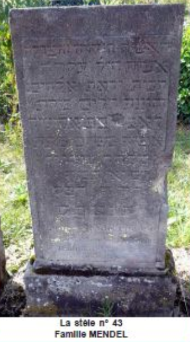
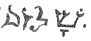
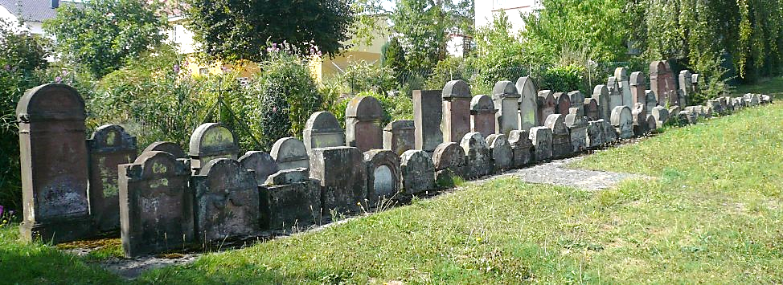

La communauté juive
Dans cette ouvrage historique, la communauté juive mérite également d’être mentionnée, malgré le manque de documents qui pourraient déterminer de quand date son installation.
Les juifs en Lorraine
Dès le 13ème siècle, on trouve des juifs dans notre région, à Sarreguemines, Hambach, Puttelange-aux-Lacs…
En 1477 éclata une guerre entre la Lorraine et la Bourgogne qui se termina par la mort du Duc de Bourgogne, Charles le Téméraire, devant Nancy.
Le Duc de Lorraine René II accusa les juifs de connivence avec les Bourguignons et les expulsa du Duché après avoir confisqué leurs biens. L’accusation n’était guère fondée mais le Duc profita de l’occasion pour se débarrasser des juifs devenus trop influents, jusque dans les milieux proches de sa cour.
Ils se réfugièrent dans les principautés voisines. Le Seigneur de Frauenberg, par exemple, accueillit une colonie importante.
Les juifs à Rouhling
Il est probable que dès cette époque, quelques familles trouvèrent asile à Rouhling sous la protection des seigneurs du lieu, les Comtes de Sarrebruck-Nassau. Il faut également admettre que la colonie décimée par la guerre de Trente Ans connût un accroissement lors du repeuplement à la fin du 17ème siècle.
Vers le milieu du 18ème siècle, ils durent payer une taxe appelée « Judenschutz » à savoir 2 Gulden (Florins) par foyer et un droit d’enterrement de 1 ½ Gulden pour un adulte et la moitié de cette somme pour un enfant. Ces « recettes » étaient partagées entre les Barons de KERPEN et la Commanderie de l’ordre des Chevaliers Teutoniques de Sarrebruck.
La Synagogue était placée sous la protection de cet ordre moyennant une taxe annuelle de 4 Gulden. En plus de cette somme, la communauté devait livrer un pain de sucre à la commanderie de l’ordre des Chevaliers Teutoniques, chaque 1er janvier.
L’intellectuel de la communauté était Lambert SELIGMANN, « Cantor » (chef de chœur), maître d’école « Vorbeter ». Il habitait la maison supérieure de l’îlot (construite en 1623), qui se trouvait au milieu du village jusqu’en 1940 et que les anciens appelaient : « Lamber’sch alt Huss ». Ce surnom, donné à la famille JUNG qui l’habitait après le départ des familles juives jusqu’en 1926, semble plutôt dû à Lambert JUNG, né en 1813, grand-père de feue, Marie JUNG épouse Joseph SPOHR.
La Synagogue se serait trouvée dans la maison REES, à l’entrée d’une petite ruelle au milieu du village appelée « Eberhard’s Gaessel ». Dans le document (B10093) se trouvant aux archives départementales de la Moselle, il est écrit qu’en 1766, (*) RUBEN Salomon signe au nom de la communauté juive, l'achat d'une maison pour servir de Schule (=synagogue) à Rouhling.
Avant l’acquisition de ce bâtiment, les juifs durent se rendre à la synagogue de Welferding qui recevait également les juifs de Sarreguemines jusqu’au milieu du 18ème siècle.
Une situation peu enviable
Nous ne savons que très peu de choses des juifs rouhlingeois des 17ème et 18èmesiècle car non citoyens et non chrétiens, ils ne pouvaient pas figurer dans les registres paroissiaux ou d’État Civil locaux avant 1792. La révolution française leur accorda les droits des citoyens.
C’étaient des pauvres gens dans le monde de paysans, qui n’avait de considération que pour la propriété terrienne de laquelle les juifs étaient précisément exclus et dans un monde chrétien où l’Église stigmatisait leur échéance comme étant le résultat de la punition infligée au peuple déicide.
() RUBEN Salomon né vers 1710 et décédé vers 1780 à Rouhling, était Rabbin et marchand.*
Ils exerçaient tout d’abord de pauvres métiers :
Colporteurs, chiffonniers… plus tard ils pénétrèrent le commerce intéressant le monde rural : marchands de grains, de fourrage, de bestiaux, de cochons, quincaillerie…
A Rouhling, les familles LEVY exerçaient les métiers, de relieurs et de joueurs de violon.
Une importante colonie
La révolution Française avait levé dès 1791 l’anathème séculaire qui pesait sur les Juifs, les protestants et les comédiens.
Pour obtenir droits civils et politiques, les juifs durent se rendre au Tribunal, prêter serment et adopter un nom de leur choix et un prénom homologué ; ce que firent les juifs de Rouhling en se rendant le 21 octobre 1808 au « Amtsgericht » à Sarrebruck, où ils abandonnèrent leurs noms et prénoms tels que, BEILEN, BORIG, LEVY, RUBEN, SALOMON, ZERLEN…
Le document relatif à cet événement nous permet de connaître avec précision la colonie juive de cette époque à savoir les 14 ménages suivants, pour un total de 47 personnes avec les enfants.
Juifs habitant à Rouhling en 1808
Simon KAUFFMANN époux de Rosine THIEBAULT Marguerite LIEBMANN
Léopold MEYER époux de Elisabeth LIEBMANN Marianne LEVY
Didier LEVY époux de Charlotte RUBEN Simon LEVY
Louis BLOCH époux de Barbara LIEBMANN Anna BLOCH
André BLOCH époux de Dorothée DANIEL Lambert SELIGMANN
Jean LEVY époux de Ursule MEYER
Elie LEVY époux de Agathe CREANGE
Jean Pierre KAUFFMANN époux de Nanette CREANGE
Benoît KAUFFMANN époux de Sophie JACOB
Le document comporte 23 signatures dont 18 en écriture hébraïque ; Élie LEVY et Lambert SELIGMANN signèrent en caractères latins, seules 3 femmes ne savaient pas écrire. Leur alphabétisation était en avance sur celle des autres Rouhlingeois non juifs.
Après la révolution, les juifs partirent petit à petit. Les personnes les plus âgées ne peuvent plus se souvenir en avoir vu habitant à Rouhling. Le dernier qui louait les champs de l’église (Kirchenland) en 1822, était le négociant en céréales MAYER-LEVY.
Au cours de la 1ère moitié du 19ème siècle, les juifs quittèrent progressivement Rouhling pour s’installer à Grosbliederstroff, alors chef-lieu de canton. Leur départ semble dû à l’impossibilité d’avoir une école à Rouhling.
De 1815 à 1833, il y eut 16 naissances, 7 décès, 4 mariages, enregistrés à l’État-Civil de Rouhling.
La dernière naissance
Mayer JUDAS fils de Jacques JUDAS et de Rechela LEVY le 5 juin 1833.
Le dernier mariage
Entre Seligmann BLOCH, fils de Auser BLOCH et Dina LOEB et Blimela LEVY, fille de Elias LEVY, musicien et Agathe CREANGE le 26 novembre 1829.
Les derniers décès
Hela LEVY (48 ans) fille de Moyse LEVY et Nanette CAEN, décédée le 28 septembre 1833 et Gwendelé ROBIN (88 ans) veuve de M. MAYER de Hellimer, décédée le 11/04/1833.
Les enterrements
Après leur départ, ils continuèrent à enterrer leurs morts dans le cimetière de Rouhling. Les dernières inhumations étaient celles de Louise MENDEL, décédée à l’âge de 38 ans le 11 juillet 1878 et de G. BLOCH le 9 décembre 1883. À cette époque, le cimetière aurait nécessité un agrandissement mais le terrain avoisinant était jugé hors de prix par la communauté. Il fut donc abandonné et transféré à Grosbliederstroff, commune voisine à 3 kilomètres.
Ce n’était pas un mal car les enterrements à Rouhling présentaient des inconvénients certains : le cercueil était porté à dos d’homme en montant la côte de Grosbliederstroff, souvent sous les quolibets si ce n’est des jets de pierre de la jeunesse rouhlingeoise. Spectacle affligeant dans un village qui avait été une terre d’accueil pendant des siècles pour juifs et protestants expulsés.
Aujourd’hui, Rouhling a expié ces fautes en entretenant soigneusement le cimetière avec tout le respect dû à ceux qui y reposent.
Un magnifique chêne veille aujourd’hui sur leur repos éternel.
Nous leur disons :
(Lisez : SCHALOM)
Le cimetière
Il serait dommage que les rouhlingeois qui ont su préserver cet élément de leur patrimoine ne connaissent pas les « mystérieuses » inscriptions sur les stèles conservées et surtout les remarquables épitaphes.
Le 17 février 1963, le Conseil Municipal a demandé à M. le Sous-préfet de bien vouloir prononcer la fermeture du cimetière Israélite. Il est précisé qu'il n'y a pas eu d'inhumation dans le cimetière israélite depuis le 09/12/1883.
Depuis le 14/11/1973 une convention a été signée entre le Consistoire Israélite de la Moselle et la municipalité de Rouhling, qui s’est engagée à entretenir l’espace vert et la clôture du cimetière juif se trouvant à l’entrée de la rue du Vignoble. En accord avec le Consistoire les stèles ont été alignées sur deux rangées pour faciliter l’entretien du terrain.
Conseil Municipal du 20/11/1946
Un point de l’ordre du jour de cette séance concerna le cimetière juif. Le Maire donna lecture de la lettre de monsieur le Préfet de la Moselle, ainsi que celle du Consistoire Israélite de la Moselle.
Le Conseil Municipal ignorant les décisions de l’autorité allemande, ne savait pas que ce cimetière avait été attribué à la commune. L’assemblée décide que le cimetière cité ci-avant, soit rendu à la communauté juive.
Identification des stèles
La rangée antérieure comporte 33 stèles et dans la rangée postérieure on en dénombre 31. La numérotation nécessaire à l’identification est faite de gauche à droite, donc en commençant en bas.
Sur ces 64 stèles, les inscriptions sont illisibles sur 26 d’entre elles et dans 8 cas, seuls les chapiteaux sont conservés. La lecture est mal aisée en raison de l’érosion et de l’absence de la ponctuation des lettres. Certains prénoms, issus du Yiddish ancien, posent aussi un problème.
Datations
L’origine du cimetière n’est pas mieux connue que celle de la communauté juive de Rouhling. Il apparaît que les plus anciennes stèles ont disparues. Tous les enterrements répertoriés se sont déroulés entre 1843 et 1885 et concernent des personnes décédées à Grosbliederstroff, à 3 exceptions près, signalées ci-après.
Les dates indiquées sur les stèles sont presque exclusivement les « mois » du calendrier juif, les « jours » sont surtout indiqués en chiffres sauf le Shabbat, les « années » sont celles du « Comput » (45), un calendrier particulier, servant à déterminer les fêtes religieuses. Une seule date concerne le calendrier hébraïque, l’an 5629 depuis la Création du Monde, selon le Livre de la Genèse, celui-ci correspond à l’an 1869. Les dates correspondantes au calendrier Grégorien sont indiquées dans la colonne identification du tableau ci-après.
Dans le tableau ci-après, les inscriptions répétitives sont abrégées :
-
PC : Petit Comput
-
QSASR : « Que son âme soit reliée au faisceau des vivants »
Nota : Des extraits du texte et le relevé du cimetière sont issus d’un article de Joseph Wack
45. On appelle comput pascal, ou plus simplement comput, l'ensemble des techniques de calcul qui permettent de déterminer la date à laquelle la fête de Pâques doit être célébrée chaque année. Depuis le VIIIe siècle, ces calculs suivent universellement la norme établie à Alexandrie, qui a bénéficié de l'expérience des astronomes égyptiens
RELEVE DU CIMETIERE JUIF
Raymond LEHMANN
Joseph WACK


